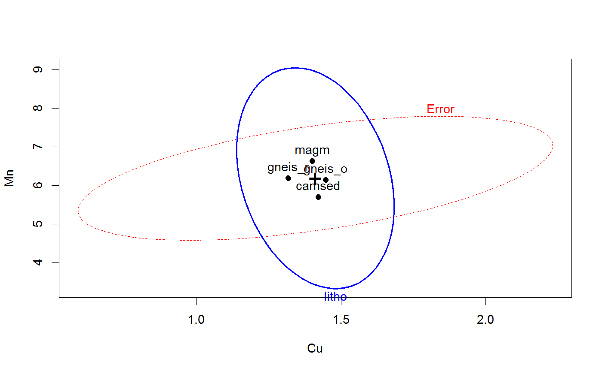
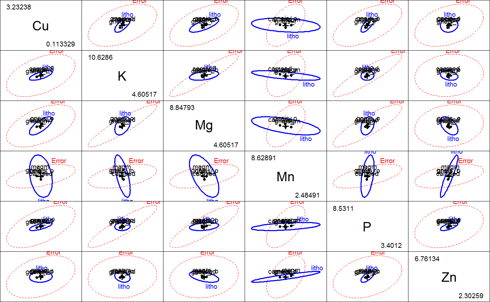

<!-- Generated by pkgdown: do not edit by hand -->
<!DOCTYPE html>
<html>
  <head>
  <meta charset="utf-8">
<meta http-equiv="X-UA-Compatible" content="IE=edge">
<meta name="viewport" content="width=device-width, initial-scale=1.0">

<title>Oslo Transect Subset Data — Oslo • heplots</title>

<!-- jquery -->
<script src="https://code.jquery.com/jquery-3.1.0.min.js" integrity="sha384-nrOSfDHtoPMzJHjVTdCopGqIqeYETSXhZDFyniQ8ZHcVy08QesyHcnOUpMpqnmWq" crossorigin="anonymous"></script>
<!-- Bootstrap -->
<link href="https://maxcdn.bootstrapcdn.com/bootswatch/3.3.7/cerulean/bootstrap.min.css" rel="stylesheet" crossorigin="anonymous">

<script src="https://maxcdn.bootstrapcdn.com/bootstrap/3.3.7/js/bootstrap.min.js" integrity="sha384-Tc5IQib027qvyjSMfHjOMaLkfuWVxZxUPnCJA7l2mCWNIpG9mGCD8wGNIcPD7Txa" crossorigin="anonymous"></script>

<!-- Font Awesome icons -->
<link href="https://maxcdn.bootstrapcdn.com/font-awesome/4.6.3/css/font-awesome.min.css" rel="stylesheet" integrity="sha384-T8Gy5hrqNKT+hzMclPo118YTQO6cYprQmhrYwIiQ/3axmI1hQomh7Ud2hPOy8SP1" crossorigin="anonymous">


<!-- pkgdown -->
<link href="../pkgdown.css" rel="stylesheet">
<script src="../jquery.sticky-kit.min.js"></script>
<script src="../pkgdown.js"></script>
  
  
<!-- mathjax -->
<script src='https://mathjax.rstudio.com/latest/MathJax.js?config=TeX-AMS-MML_HTMLorMML'></script>

<!--[if lt IE 9]>
<script src="https://oss.maxcdn.com/html5shiv/3.7.3/html5shiv.min.js"></script>
<script src="https://oss.maxcdn.com/respond/1.4.2/respond.min.js"></script>
<![endif]-->


  </head>

  <body>
    <div class="container template-reference-topic">
      <header>
      <div class="navbar navbar-default navbar-fixed-top" role="navigation">
  <div class="container">
    <div class="navbar-header">
      <button type="button" class="navbar-toggle collapsed" data-toggle="collapse" data-target="#navbar">
        <span class="icon-bar"></span>
        <span class="icon-bar"></span>
        <span class="icon-bar"></span>
      </button>
      <a class="navbar-brand" href="../index.html">heplots</a>
    </div>
    <div id="navbar" class="navbar-collapse collapse">
      <ul class="nav navbar-nav">
        <li>
  <a href="../index.html">
    <span class="fa fa-home fa-lg"></span>
     
  </a>
</li>
<li>
  <a href="../reference/index.html">Reference</a>
</li>
      </ul>
      
      <ul class="nav navbar-nav navbar-right">
        
      </ul>
    </div><!--/.nav-collapse -->
  </div><!--/.container -->
</div><!--/.navbar -->

      
      </header>

      <div class="row">
  <div class="col-md-9 contents">
    <div class="page-header">
    <h1>Oslo Transect Subset Data</h1>
    </div>

    
    <p>The Oslo  data set contains chemical concentrations of
332 samples of different plant species collected along a 120 km transect running through the city of Oslo, Norway.
It is a subset of the <code><a href='http://www.rdocumentation.org/packages/rrcov/topics/OsloTransect'>OsloTransect</a></code> data provided by the
<code>rrcov</code> package.</p>
    

    <pre class="usage"><span class='fu'>data</span>(<span class='no'>Oslo</span>)</pre>
        
    <h2 class="hasAnchor" id="format"><a class="anchor" href="#format"></a>Format</h2>

    <p>A data frame with 332 observations on the following 14 variables.</p><dl class='dl-horizontal'>
    <dt><code>site</code></dt><dd><p>transect site ID, a factor with levels <code>102</code> <code>103</code> <code>104</code> <code>105</code> <code>106</code> <code>107</code> <code>108</code> <code>109</code> <code>111</code> <code>112</code> <code>113</code> <code>114</code> <code>115</code> <code>116</code> <code>117</code> <code>118</code> <code>119</code> <code>121</code> <code>122</code> <code>123</code> <code>124</code> <code>125</code> <code>126</code> <code>127</code> <code>128</code> <code>129</code> <code>131</code> <code>132</code> <code>133</code> <code>134</code> <code>135</code> <code>136</code> <code>138</code> <code>139</code> <code>141</code> <code>142</code> <code>143</code> <code>144</code></p></dd>
    <dt><code>XC</code></dt><dd><p>X coordinate, a numeric vector</p></dd>
    <dt><code>YC</code></dt><dd><p>Y coordinate, a numeric vector</p></dd>
    <dt><code>forest</code></dt><dd><p>forrest type, a factor with levels <code>birspr</code> <code>mixdec</code> <code>pine</code> <code>sprbir</code> <code>sprpin</code> <code>spruce</code></p></dd>
    <dt><code>weather</code></dt><dd><p>weather type, a factor with levels <code>cloud</code> <code>moist</code> <code>nice</code> <code>rain</code></p></dd>
    <dt><code>litho</code></dt><dd><p>lithological type, a factor with levels <code>camsed</code> (Cambro-Silurian sedimentary), 
    	<code>gneis_o</code> (Precambrian gneisses - Oslo), <code>gneis_r</code> (- Randsfjord), 
    	<code>magm</code> (Magmatic rocks)</p></dd>
    <dt><code>altitude</code></dt><dd><p>altitude, a numeric vector</p></dd>
    <dt><code>Cu</code></dt><dd><p>Copper, a numeric vector</p></dd>
    <dt><code>Fe</code></dt><dd><p>Iron, a numeric vector</p></dd>
    <dt><code>K</code></dt><dd><p>Potassium, a numeric vector</p></dd>
    <dt><code>Mg</code></dt><dd><p>Magnesium, a numeric vector</p></dd>
    <dt><code>Mn</code></dt><dd><p>Manganese, a numeric vector</p></dd>
    <dt><code>P</code></dt><dd><p>Lead, a numeric vector</p></dd>
    <dt><code>Zn</code></dt><dd><p>Zinc, a numeric vector</p></dd>
  </dl>
    
    <h2 class="hasAnchor" id="details"><a class="anchor" href="#details"></a>Details</h2>

    <p>The <code><a href='http://www.rdocumentation.org/packages/rrcov/topics/OsloTransect'>OsloTransect</a></code> contains 360 observations, with 9 observations per site.
Only 7 chemical elements were retained from the 25 contained in the 
<code><a href='http://www.rdocumentation.org/packages/rrcov/topics/OsloTransect'>OsloTransect</a></code> data,
and these were all log-transformed, following Todorov and Filzmoser (2009).</p>
<p>Only complete cases on these variables were retained, and two lithological types of
low frequency were removed,
leaving 332 observations.</p>
    
    <h2 class="hasAnchor" id="source"><a class="anchor" href="#source"></a>Source</h2>

    <p>Reimann, C., Arnoldussen, A., Boyd, R., Finne, T.E., Koller, F., Nordgulen, Oe., And Englmaier, P. (2007) 
Element contents in leaves of four plant species (birch, mountain ash, fern and spruce) along anthropogenic and 
geogenic concentration gradients, 
<em>The Science of the Total Environment</em>, 377, 416-433.</p>
    
    <h2 class="hasAnchor" id="references"><a class="anchor" href="#references"></a>References</h2>

    <p>Todorov V. and Filzmoser P. (2009) 
Robust statistic for the one-way MANOVA, submitted to the <em>Journal of Environmetrics</em>.</p>
    

    <h2 class="hasAnchor" id="examples"><a class="anchor" href="#examples"></a>Examples</h2>
    <pre class="examples"><div class='input'><span class='fu'>data</span>(<span class='no'>Oslo</span>)
<span class='fu'>table</span>(<span class='no'>Oslo</span>$<span class='no'>litho</span>)</div><div class='output co'>#&gt; 
#&gt;  camsed gneis_o gneis_r    magm 
#&gt;      98      89      32     113 </div><div class='input'>
<span class='no'>Oslo.mod</span> <span class='kw'>&lt;-</span> <span class='fu'>lm</span>(<span class='fu'>cbind</span>(<span class='no'>Cu</span>, <span class='no'>K</span>, <span class='no'>Mg</span>, <span class='no'>Mn</span>, <span class='no'>P</span>, <span class='no'>Zn</span>) ~ <span class='no'>litho</span>, <span class='kw'>data</span><span class='kw'>=</span><span class='no'>Oslo</span>)
<span class='fu'>Anova</span>(<span class='no'>Oslo.mod</span>)</div><div class='output co'>#&gt; 
#&gt; Type II MANOVA Tests: Pillai test statistic
#&gt;       Df test stat approx F num Df den Df    Pr(&gt;F)    
#&gt; litho  3   0.24655   4.8503     18    975 1.503e-10 ***
#&gt; ---
#&gt; Signif. codes:  0 <U+0091>***<U+0092> 0.001 <U+0091>**<U+0092> 0.01 <U+0091>*<U+0092> 0.05 <U+0091>.<U+0092> 0.1 <U+0091> <U+0092> 1</div><div class='input'>
<span class='fu'><a href='heplot.html'>heplot</a></span>(<span class='no'>Oslo.mod</span>, <span class='kw'>var</span><span class='kw'>=</span><span class='fu'>c</span>(<span class='st'>"Cu"</span>, <span class='st'>"Mn"</span>))</div><div class='img'></div><div class='input'><span class='fu'>pairs</span>(<span class='no'>Oslo.mod</span>)</div><div class='img'></div><div class='input'>
</div><span class='co'># NOT RUN {</span>
<span class='kw'>if</span>(<span class='fu'>require</span>(<span class='no'>candisc</span>)) {
  <span class='no'>Oslo.can</span> <span class='kw'>&lt;-</span> <span class='fu'><a href='http://www.rdocumentation.org/packages/candisc/topics/candisc'>candisc</a></span>(<span class='no'>Oslo.mod</span>)
  <span class='no'>Oslo.can</span>
  <span class='fu'><a href='heplot.html'>heplot</a></span>(<span class='no'>Oslo.can</span>)
  <span class='fu'><a href='heplot3d.html'>heplot3d</a></span>(<span class='no'>Oslo.can</span>, <span class='kw'>shade</span><span class='kw'>=</span><span class='fl'>TRUE</span>, <span class='kw'>wire</span><span class='kw'>=</span><span class='fl'>FALSE</span>, <span class='kw'>alpha</span><span class='kw'>=</span><span class='fl'>0.5</span>, <span class='kw'>var.col</span><span class='kw'>=</span><span class='st'>"red"</span>)
}
<span class='co'># }</span><div class='input'>
</div></pre>
  </div>
  <div class="col-md-3 hidden-xs hidden-sm" id="sidebar">
    <h2>Contents</h2>
    <ul class="nav nav-pills nav-stacked">
      
      <li><a href="#format">Format</a></li>

      <li><a href="#details">Details</a></li>

      <li><a href="#source">Source</a></li>

      <li><a href="#references">References</a></li>
      
      <li><a href="#examples">Examples</a></li>
    </ul>

  </div>
</div>

      <footer>
      <div class="copyright">
  <p>Developed by John Fox, Michael Friendly.</p>
</div>

<div class="pkgdown">
  <p>Site built with <a href="http://hadley.github.io/pkgdown/">pkgdown</a>.</p>
</div>

      </footer>
   </div>

  </body>
</html>
